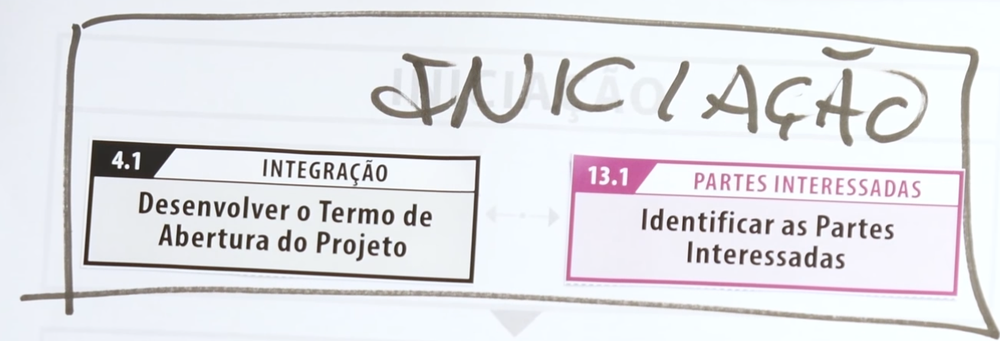

Introdução à Gestão de Projetos

Inicialmente, precisaremos compreender sobre o que é um projeto e seus elementos.
Destacamos especial atenção para algumas definições, baseados no PMBoK® Guide, 6a Ed. PMI.
Projeto
Projeto é um esforço temporário empreendido para criar um produto, serviço ou resultado exclusivo.
Projetos vs. Operações
Entendimentos semelhantes:
- realizado por pessoas;
- limitado aos recursos disponíveis;
- planejados;
- executados; e,
- controlados.
Entendimentos diferentes:
Operações:
- Definidos e utilizados frequentemente;
- Contínuas;
- Repetitivas;
- Mantém o negócio.
Projetos: - Construção progressiva; - Temporários; - Únicos; - Alcançam seu objetivo e, logo em seguida, terminam.
Características de um projeto (Planejado, executado e controlado): - Feito por pessoas; - Tem início e fim; - Cria um resultado único; - Elaborado progressivamente; - Possui um custo; - Sofre restrições de recursos limitados; - Corre riscos para alcançar o sucesso; - Pode adquirir produtos ou contratar serviços.
Gerente de Projetos
Responsabilidades:
- O gerente de projetos é, acima de tudo, um líder.
- Se comunicar muito bem.
- Mantem-se em constante aprendizagem
- Tem um lado negociador
- Abraça as mudanças como algo natural
- É um excelente gestor de processos
- Sabe avaliar riscos
- Mantem o foco nos resultados
Iniciação

A primeira coisa que faremos será recorrer ao Processo de Iniciação, para começarmos a dar 'vida' ao projeto, seguindo para o tópico:
Termo de Abertura do Projeto
4.1 Desenvolver o Termo de Abertura do Projeto
É um documento simples, objetivo, de uma ou duas páginas, que basicamente nos diz o que será realizado e como se dará essa realização.
Há vários modelos disponíveis na Internet, para a construção desse projeto, nos utilizaremos das definições disponibilizadas por Ricardo Vargas, disponíveis em seu site:
- Termo de Abertura e Declaração de Escopo by Ricardo Vargas.
Em seguida, vamos recorrer ao tópico:
Partes Interessadas
13.1 Identificar as Partes Interessadas, ou seja, quem são os intervenientes, ou seja, com quem vamos precisar nos relacionar ou nos comunicar, dentro do projeto, quem será o:
- Cliente;
- Patrocinador(es);
- Fornecedores;
- Entidades Governamentais;
- Competidores
- ...
Referências
- PMI. PMBoK Guide. \(6^{\text{th}}\) Edition. 2020.
- Vargas, R. Explicando o PMBoK. Disponível em: https://ricardo-vargas.com/. Acesso em: 7 Set. 2021.
- Pacheco, V. Gestão de Projetos. Disponível em: https://gist.github.com/sftom/9c5e420c9919d2707c8f98713d4e50fa